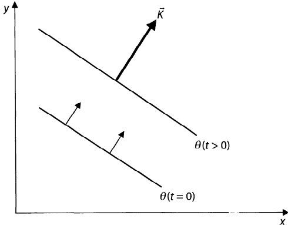

How long do we have to wait until the same phase appears? The wave period \( T \) is the shortest time for the same phase to reappear defined by
\(
\omega T = 2\pi \Rightarrow T = \frac{2\pi}{\omega}
\)
What is the speed of movement of the line of constant phase?
\(
\theta = k_j x_j - \omega t = Ks - \omega t
\)
As \(t\) increases, \(s\) must increase to keep the phase constant 
\(
\left( \frac{\partial s}{\partial t} \right)_{\theta} = -\frac{\partial \theta / \partial t}{\partial \theta / \partial s} = \frac{\omega}{K}
\)
The appearance of the minus sign is because at constant \(\theta\), \(\delta \theta = 0 = K ds - \omega dt\), so that \(ds/dt = \omega/K\)
In 2D the phase speed in the \(x\)-direction would be defined, at fixed \(y\),
\(
d\theta = 0 = k dx - \omega dt
\text{ or }
c_x = \frac{\omega}{k} = -\frac{\partial \theta / \partial t}{\partial \theta / \partial x}
\) Also, the increase in phase along the wave vector is
\(
\Delta \theta = \int \frac{\partial \theta}{\partial s} ds = \int K ds
\)
In all physical wave problems, the dynamics will impose a relation between the wave vector and the frequency. This relation is called the dispersion relation.
The form of the dispersion relation can be written as
\[
\omega = \Omega(k_j)
\]
1 Pedlosky, Joseph. (2003). Waves in the Ocean and Atmosphere: Introduction to Wave Dynamics. Springer-Verlag, Heidelberg and New York.